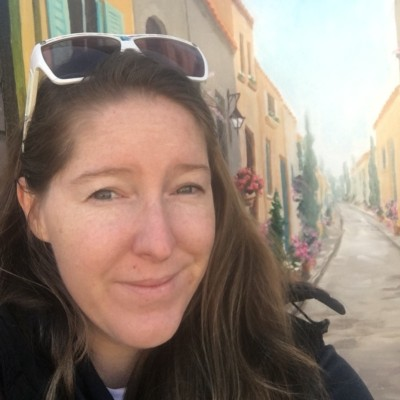

Welcome
Hi. Welcome to my portfolio.
My name is Katrina Tomaszczyk.
Let me guide you on a journey through my experience and passion for web development through my website.
"Truth can only be found in one place: the code." - Robert C. Martin
Hi. Welcome to my portfolio.
My name is Katrina Tomaszczyk.
Let me guide you on a journey through my experience and passion for web development through my website.
2017 was the year that I started my journey of critical thinking and product lifecycle development.
Starting as a Systems Analyst, I was in charge of identifying problems, triaging, raising and prioritising development tickets for the team.
Contunued to bigger products through to 2022.
2022, Saw the start of my dedication towards learning how to code. The beginning is through a Udemy Bootcamp Course to become a Fullstack Developer and now at -->Coder Academy.
My goals include: Dedicating myself to build the habit and to develop a passion to code almost daily. So far so well and loving it.
Click the 'Contact Me' link below to find the best methods to contat me. Looking forward to hear from you.
Contact MeCheck out my Git Hub account for large projects. However this section, I wanted to highlight some of the new skills I have learnt.
I love that we can add in images directly from a website. Those images even change every time you refresh!
Welcome to my blog posts.
This section captures blogs written by me. It’s an opportunity to get to know me a little better and follow my interests.
You never know, you might learn something new. Thank you for reading.
My Blogs